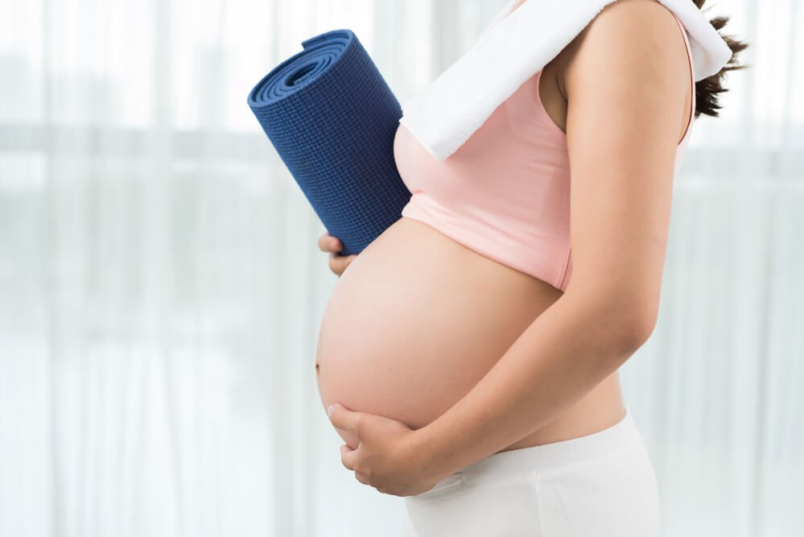

Фітнес для Вагітних: Збереження Здоров'я та Енергії на
Шляху до Материнства
Вагітність — це особливий період у житті кожної жінки, який вимагає особливого
уваги до фізичного здоров'я та емоційного благополуччя. Насамперед, багато
майбутніх матусь хочуть залишатися активними та здоровими. Дієвий підхід до
фітнесу вагітних жінок може стати ключем до підтримки фізичної форми та
психологічного комфорту протягом цього унікального періоду.

Вивчення спеціально розроблених вправ для вагітних, які спрямовані на
зміцнення м'язів, поліпшення гнучкості та утримання тіла у хорошій формі.
Прості рухи, такі як ходьба, плавання та легкі вправи йоги, можуть бути
особливо корисними.
Вагітність та Кардіотренування:
Обговорення впливу кардіотренувань на фізичне здоров'я вагітних жінок.
Вправи, які підвищують серцевий ритм, такі як бадмінтон, велосипед чи
аеробіка, можуть забезпечити потрібне кардіо-навантаження.
Пояснення того, як силові тренування можуть допомогти в зміцненні м'язів
спини, ніг та тазу, що полегшує фізичні труднощі під час вагітності та пологів.
Як Обрати Вірний Тренерський Підхід:
Рекомендації щодо вибору кваліфікованого тренера або інструктора, який має
досвід у роботі з вагітними жінками та розуміє особливості цього періоду.
Емоційний Аспект Фітнесу:
Аналіз впливу фітнесу на емоційний стан та психічне благополуччя майбутніх
матерів. Регулярні фізичні тренування можуть допомогти зменшити стрес та
підтримувати позитивний настрій.
Фітнес для вагітних — це не лише можливість утримати фізичну активність, але
й важливий крок у збереженні здоров'я та комфорту вагітної жінки. Із
правильним підходом та підтримкою від професіоналів, цей період може стати
не тільки часом очікування, але й часом фізичного та емоційного зростання.
Хвастик Тетяна